THESIS: QUEERING COMPUTATION
Queer theory is rooted in failure and non-normativity, which are two concepts this project embraces. This analysis is centered in the rejection of compulsory norms such as capitalism and heteronormativity. By being identified as a failure
in a system, one’s existence becomes an act of resistance against these “protocols,” becoming glitches, bugs, and errors. There is a strong link tying queer theory to non-normative computation, which I will now refer to as “queer computation,”
as both are opposing the system. Normative uses of code, determined by strict protocols, demand websites to become seamless tools that discourage critical and emotional engagement. This homogeneity leaves little room for deviation.
Queer computation creates opportunities for deviation, and is a place where I feel confident resisting. By exploiting and breaking the web’s protocols when creating digital work, I feel that I am embodied as a queer individual who
is constantly “othered.”
Deviating from these norms allows for valuable opportunities for play, resistance, and engagement. I created a collection of single serving sites that utilize queer computational techniques and notions
of embodiment. The web is regarded as a neutral space but, in these sites, I imbued the medium with emotion, physicality, and identity. I paired this with a book titled 404: Page Not Found which contextualizes the ambiguities presented
in each site, as it is a place where I display and annotate my source code. I hope to propose an alternative to normative computation in favor of one that is more human and engaging.
MIRRORWORLD
SITEA site and book featuring mirrors from craigslist paired with literature discussing mirrors. The text ranges from topics like the mirrorworld to myths (breaking a mirror yields seven years of bad luck). The mirrorworld "is some huge institution's moving, true-to-life mirror image trapped inside a computer, where you can see and grasp it whole. The thick, dense, busy sub-world that encompasses you is also, now, an object in your hands. A brand new equilibrium is born. Mirror Worlds scotch that great primal modern fear, to be entangled by the sucker-arms of the modern institutional state, and all those private mini-states within which . . . we hang embedded. They offer penetrating vision; they repair the shattered whole. (Philip E. Agre and Marc Rotenberg, eds, Technology and Privacy: The New Landscape, MIT Press, 1997)
hyperliquid studio
bioluminesence droplets before ireland cnxn hyper-liquidA collaboration with poet Sydney McMahon. We worked symbiotically, I created websites based off of her poetry and vice versa. We hope to create a more unconventional method of storytelling in this world of new media.
SURFIN CSS
download linkI created a chrome extension for surfin the web! I wanted to create a dynamic (and frustrating) experience using a clean and simple aesthetic. One of the goals for this extension was to expose a webpage's structure. This is virtually invisible to those who don't write and understand HTML. By solely showing divs by their outline, it exposes the skeleton of the web in an easily understood way. Another aspect of this virus is the deletion of all content except for links. Theory wise- the web is a medium centered around links (as opposed to consuming content using books for example- which feature a chronological narrative structure.) The main difference is that the user can travel in multiple different directions and are free from a chronological structure. By only keeping the links, the user is forced to surf the web with no means of direction except for peeking in the address bar to check where you are in the web. This highlights the essential function of the net: links!

 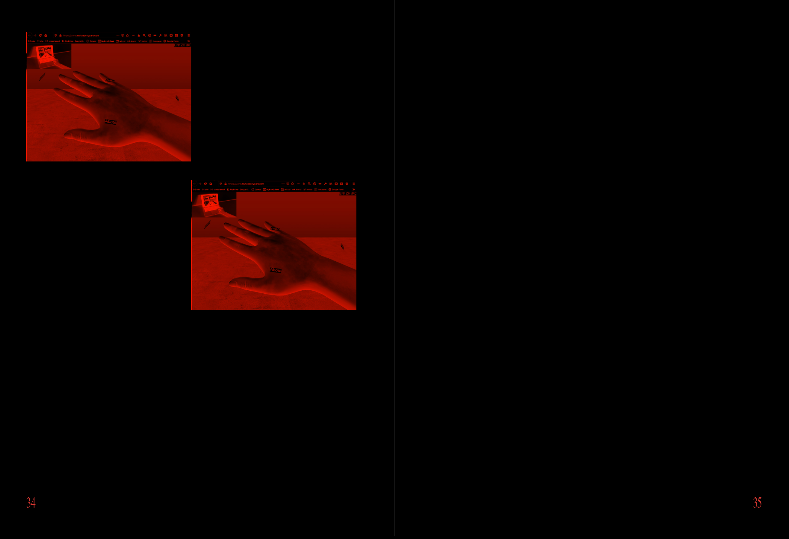
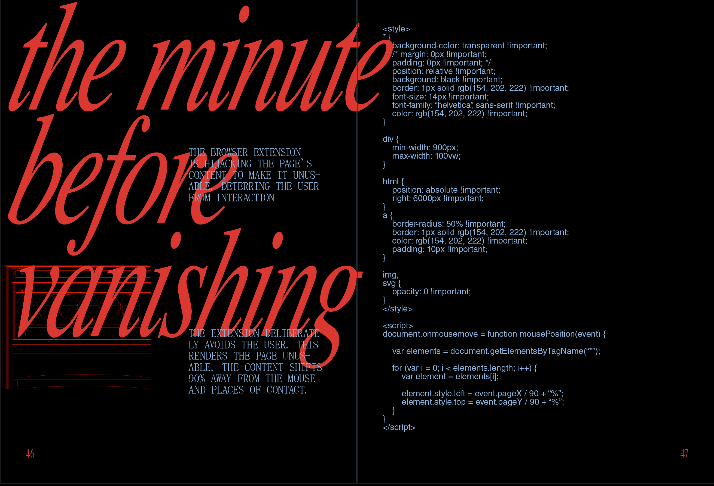
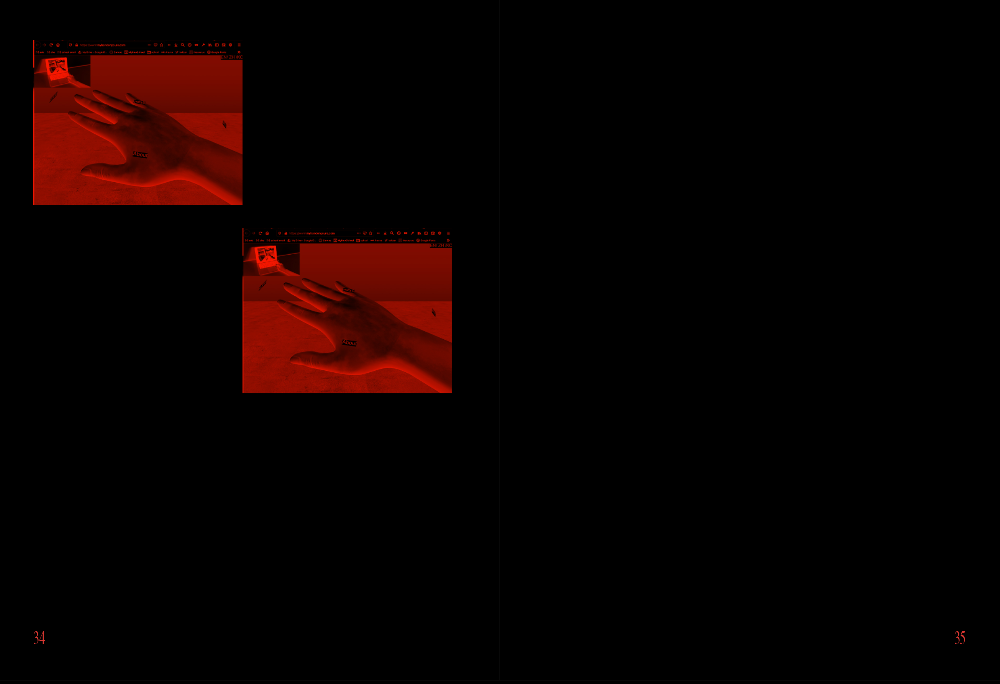
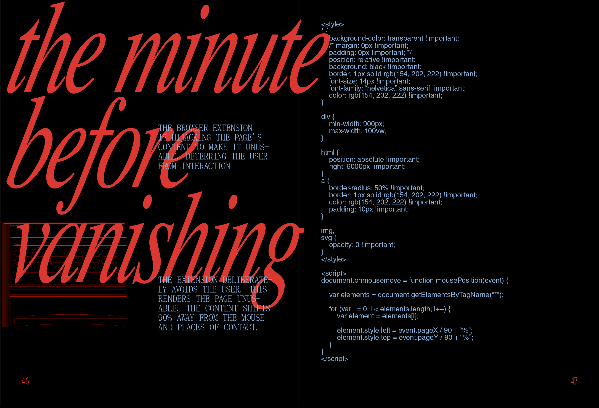


 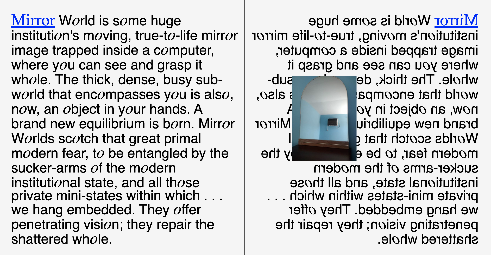
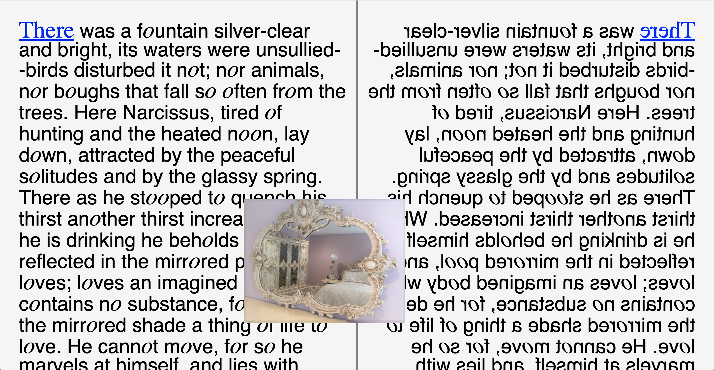
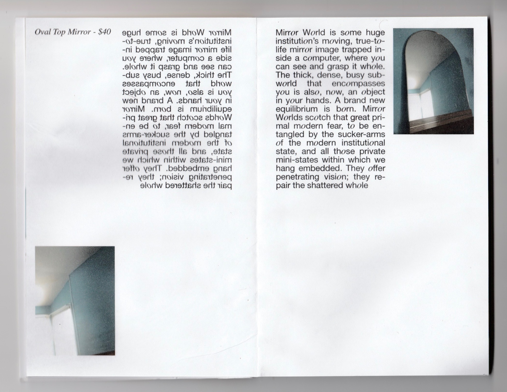
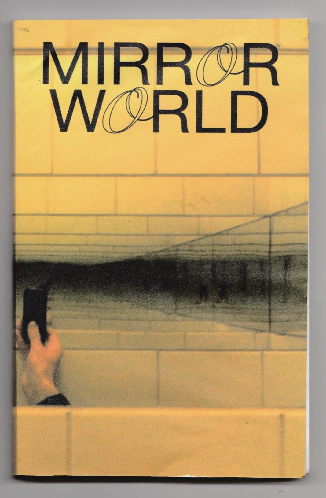
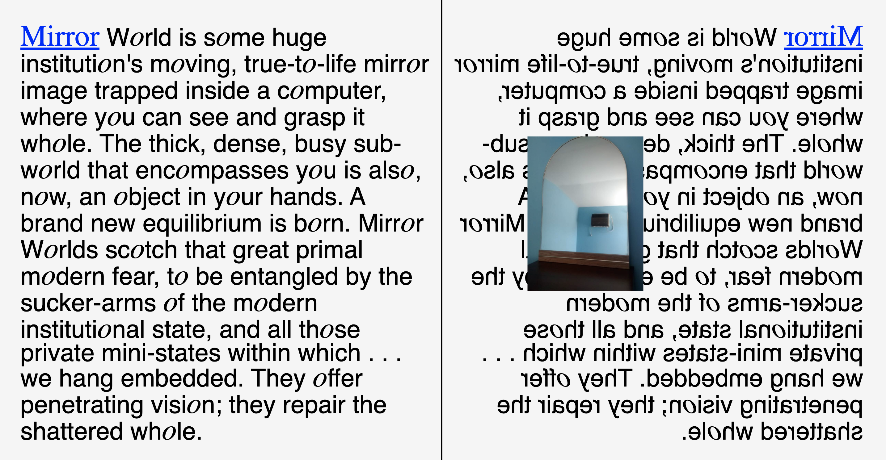
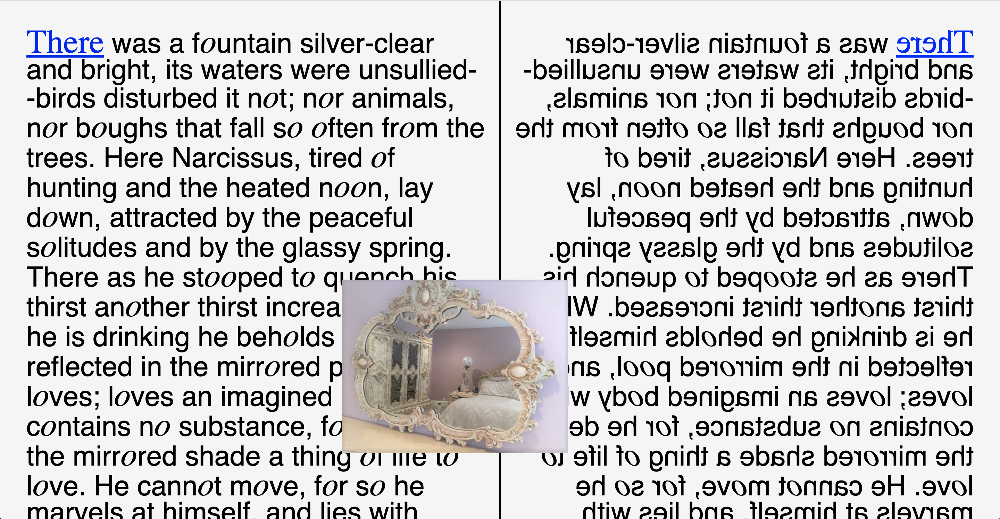
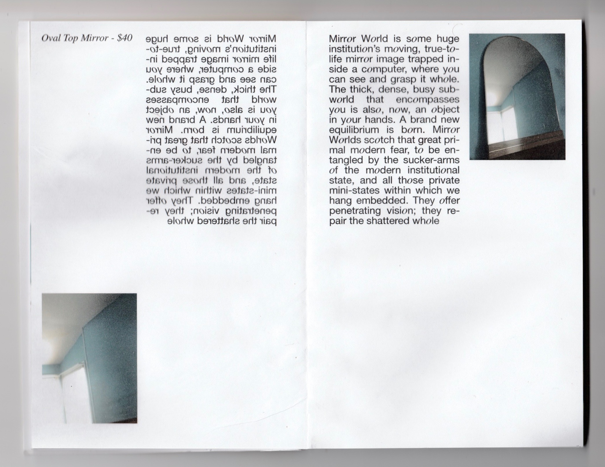
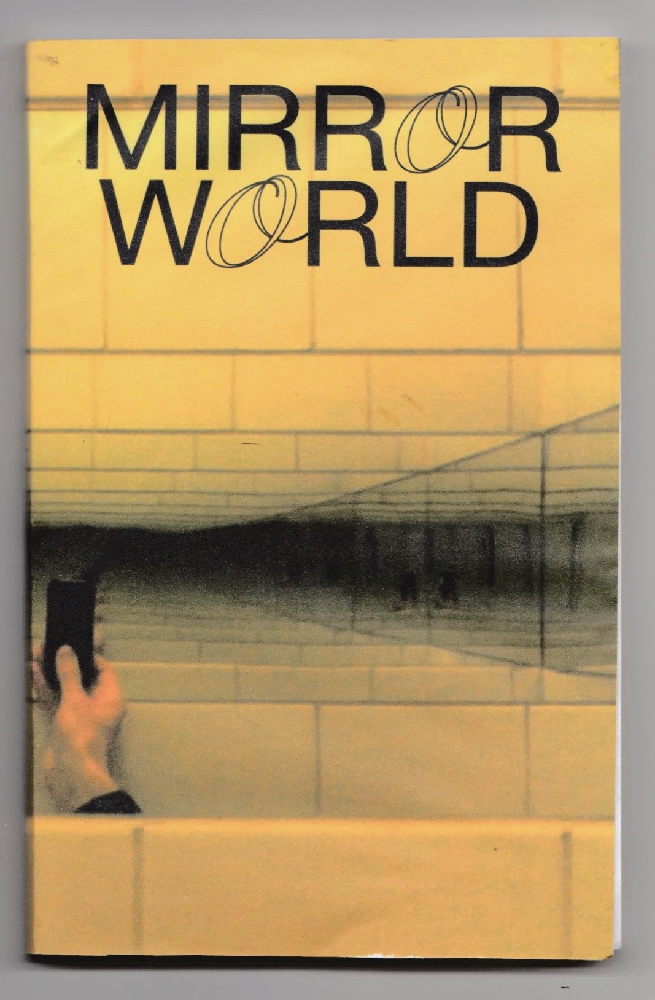